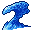

精霊の一覧 List of elementals
英語版 CrawlWiki の記事「List of elementals」(0.33 向け、2025-05-06 版)の翻訳です。原文の著者は編集履歴をご覧ください。
この記事は 0.33 の時点の内容で、最新の 0.34 とは違うところがあるかもしれません。
精霊は、土や火といった根源的な物質の塊に、それを動かす霊が宿ったものだ。分類上は非生物で、たいていはほかの生き物に召喚されたときにしか現れないが、エルフの大広間や、対応する元素が濃く集まった場所で見つかることもある。知性はなく、遠距離攻撃もほとんど持たないが、近接攻撃では強烈な元素のダメージを与えてくることが多い。意志力で抵抗する効果はいっさい効かず、毒や負のエネルギーによるダメージも受けない。ほとんどの精霊は、それぞれ独自の特徴も持っている。
クァズラルの祈祷「精霊召喚」を使えば、周りにある雲の種類に応じて、自分の精霊を呼び出せる。
精霊の種類
- E
 大気の精霊: 風が形をとった、素早く荒々しい精霊。相手をしびれさせる電撃を放つ。
大気の精霊: 風が形をとった、素早く荒々しい精霊。相手をしびれさせる電撃を放つ。 - E
 大地の精霊: のろくてずんぐりした乱暴者で、相手をぺしゃんこに叩き潰す……追いつければの話だが。
大地の精霊: のろくてずんぐりした乱暴者で、相手をぺしゃんこに叩き潰す……追いつければの話だが。 - E 火の精霊: 攻撃的な火の霊。通ったあとに炎の雲を残し、攻撃した相手を炎で包む。
- E

水の精霊: 定まった形を持たない液体の怪物。相手を打ちのめしながら、同時に溺れさせる。 - E
 精霊の源泉: 水の塊で、激流と水の精霊の両方を生み出す。
精霊の源泉: 水の塊で、激流と水の精霊の両方を生み出す。 - E
 鉄の精霊: 大地の精霊よりはるかに危険で、もっと頑丈でもっとのろく、恐ろしい鉄の飛び道具を敵に撃ち出してくる。幸い、ダンジョンスプリントにしか出てこない。
鉄の精霊: 大地の精霊よりはるかに危険で、もっと頑丈でもっとのろく、恐ろしい鉄の飛び道具を敵に撃ち出してくる。幸い、ダンジョンスプリントにしか出てこない。